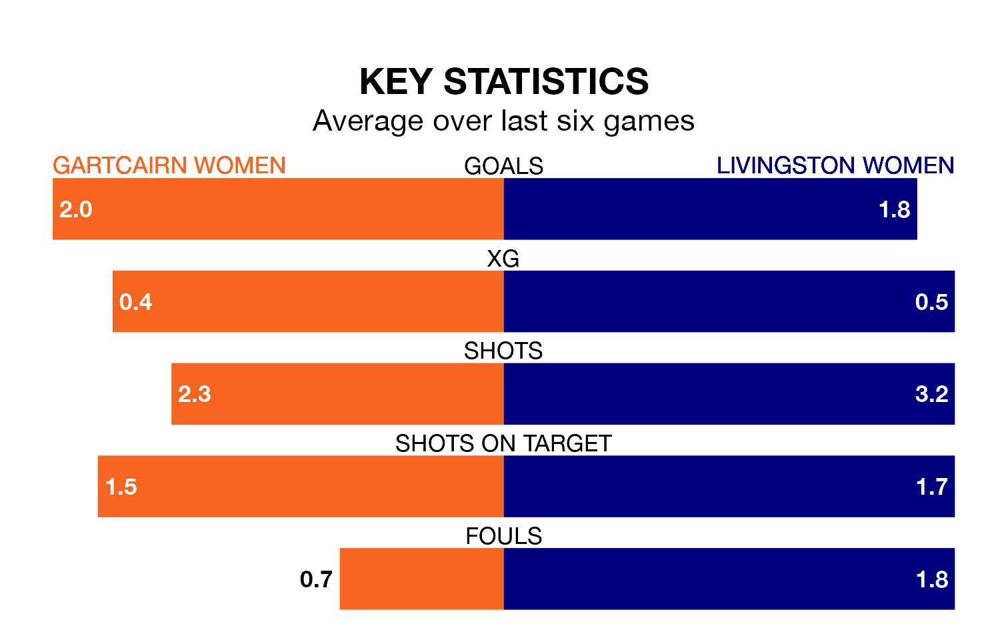

Relegation candidates Gartcairn Women face a challenge against high-flying Livingston Women at MTC Park on Sunday.
Gartcairn Women are sixth in the SWPL 2 table, and have picked up eight wins and four draws in their 25 games to date.
Livingston, meanwhile, are third in the standings with 41 points, having won 12 and drawn five, and are 24 points behind table-toppers Queen's Park Women.
With 38 goals in 25 games so far this season, Gartcairn are the league's third-lowest scorers with 1.5 goals per game. And they are conceding more than average, letting in 66 goals at a rate of 2.6 per game.
Livingston are also below average scorers, with 1.7 goals per game, compared to a league average of 1.8. They have conceded 1.5 goals per game.
In the last five years, Gartcairn and Livingston have played each other on five occasions. Gartcairn won three of them and Livingston two.
On average, Gartcairn scored 2.4 goals and Livingston 2.0 in those matches.
Their last meeting was on March 3, when Gartcairn won 2-0 away.
The hosts are in reasonable form in SWPL 2, with three wins and two draws from their last six games.
And also with three wins and two draws over that period, the away team's form is identical – they have both taken 11 points from 18.
Gartcairn's last match was on Wednesday, a 2-2 draw against Kilmarnock Women, with getting the goals for Gartcairn.
Livingston beat Glasgow Women 2-1 last time out, also on Wednesday, with on the scoresheet.
Updated: 12:00 (UTC), 02/05/24